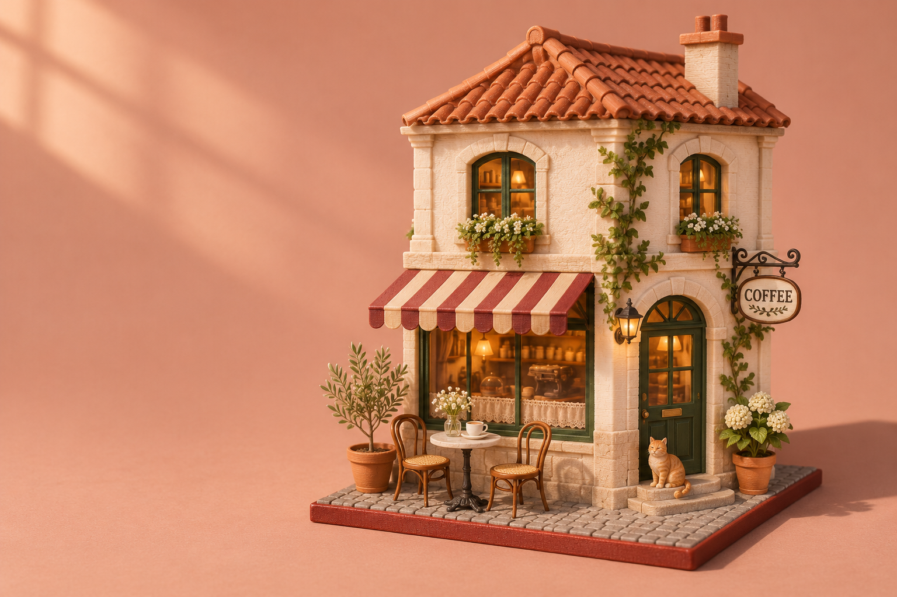

Гостю — коллекция своего места
Цвет двери, вывеска, тот самый столик. Концепция миниатюры начинается с характера вашего заведения.
Гость получает детали за визиты и собирает
миниатюру вашего кафе. Для него — коллекция.
Для вас — повод пригласить его снова.

Там знают ваш заказ. Там встречаются друзья. Там обычный вторник становится чуть лучше.
Мы придумали «Кофейный город», чтобы эти маленькие ритуалы обрели форму. Каждый визит добавляет деталь к миниатюре вашей любимой кофейни.
Механика коллекции и польза
для обеих сторон за 25 секунд.
Анимационный концепт коллекции. Без звука.
Нажимайте на детали.
Соберите место, в которое
захочется вернуться.
Ваша маленькая коллекция
1 из 5 деталей. Начало положено.
Кофейня дарит стартовую основу. Вы возвращаетесь за любимым кофе и получаете новые части домика по правилам её коллекции.
Однажды на вашей полке появляется целая улица. У каждого дома — свой вкус, свои люди и свои воспоминания.
Как это может работать в вашем кафеЦвет двери, вывеска, тот самый столик. Концепция миниатюры начинается с характера вашего заведения.
Гость получает детали постепенно и видит, чего ещё не хватает. Это может стать поводом вернуться и закончить коллекцию. Правила выдачи выбираете вы.
Зимняя крыша, летний балкон или деталь к дню рождения кафе. Коллекция может меняться вместе с вами.
Проект на стадии концепции. Изображения показывают возможный дизайн; состав, материалы и сроки определяются при разработке прототипа.
Расскажите о кафе и пожеланиях к миниатюре. Мы напишем на вашу почту, чтобы обсудить дизайн, стоимость и сроки.
Дом и знакомая дверь
Цвет двери — лесной зелёный.
Изменить детали кофейниВыбранные детали попадут в письмо вместе с заявкой. Окончательный дизайн согласуем с вами.